спільне користування дорогою
У попередніх п’яти розділах подано важливу інформацію про водіння, яка допомагає розвивати навички розумного водіння. Наступні три розділи містять поради, як застосовувати цю інформацію у власному водінні. Уміння спільно користуватися дорогою — важлива частина безпеки за кермом. У цьому розділі ви дізнаєтеся, з ким ви користуєтеся дорогою спільно і як робити це безпечно.
Безпечне спільне користування дорогою
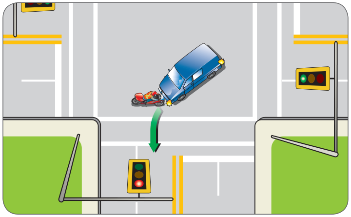
У цій аварії і Волтер, і Джоді намагалися зайняти той самий простір у той самий час. За законом Волтер мав уступити Джоді, перш ніж виконувати поворот. Але він не побачив мотоцикла. Джоді, можливо, мала право переваги, але їй усе одно слід було уважно подивитися, чи немає транспортних засобів на перехресті, перш ніж проїжджати через нього.
Щоб уникнути аварій, переконайтеся, що простір, у який ви плануєте рухатися, вільний. Щоб безпечно користуватися дорогою разом з іншими, застосовуйте навички «дивись – думай – дій».
дивись – думай – дій
Застосовуйте навички спостереження. Оглядайте перехрестя зліва праворуч і знову ліворуч, шукаючи небезпеки. Волтер почав рух через перехрестя, не перевіривши, чи дорога вільна.
дивись – думай – дій
Коли інший учасник дорожнього руху наближається до простору, який ви планували зайняти, вам потрібно оцінити ризик, а потім вибрати найбезпечніше рішення.
Важливо також знати правила права переваги. Коли два або більше учасників дорожнього руху хочуть зайняти той самий простір, правила права переваги вказують, хто з них мусить уступити. Проте інші учасники руху роблять помилки й діють неочікувано. Не завжди легко визначити, хто має право переваги. Якщо є сумніви, завжди будьте готові уступити право переваги.
Щоб дізнатися більше про правила права переваги, читайте розділ 4 — правила дорожнього руху.
дивись – думай – дій
Керування швидкістю
Їдьте з безпечною швидкістю. Тоді ви матимете час зупинитися, якщо буде потрібно.
Керування рулем
Тримайте обидві руки із зовнішнього боку рульового колеса, щоб зберігати добрий контроль над рулем.
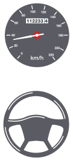
Запас простору
Якщо ви триматиметеся далеко від інших учасників дорожнього руху, конфліктів за простір буде менше. У вас буде місце, щоб зупинитися або відвернути вбік, якщо інші почнуть рухатися у ваш простір.
Комунікація
Повідомляйте іншим учасникам руху, що ви робите, щоб вони вчасно зреагували. Звертайте увагу на їхню комунікацію.
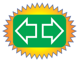
Як спільно користуватися дорогою
Наступного разу, коли зупинитеся на завантаженому перехресті, огляньтеся й порахуйте різні типи учасників руху, яких бачите. Ви
спільно користуєтеся дорогами з багатьма різними учасниками руху, зокрема:
- пішоходами (наприклад, дітьми, людьми у візках і регулювальниками)
- велосипедистами
- мотоциклістами
- водіями:
– легкових транспортних засобів
– великих транспортних засобів (наприклад, будинків на колесах і комерційних транспортних засобів)
– автобусів (шкільних і громадського транспорту)
– транспортних засобів екстрених служб
– поїздів.
Щоб безпечно спільно користуватися дорогою, вам потрібно застосовувати всі навички «дивись – думай – дій». Також вам потрібно розуміти, як різні учасники дорожнього руху користуються дорогою. У наступних підрозділах наведено основні моменти, які варто пам’ятати про кожен тип учасників дорожнього руху.
Пішоходи
Вам завжди потрібно пильнувати пішоходів. Як і всі учасники дорожнього руху, вони можуть бути непередбачуваними. Ви ніколи не знаєте, коли дитина може вибігти на вулицю або хтось може вийти з-за припаркованого автомобіля. А пішоходів часто важко побачити, особливо вночі.
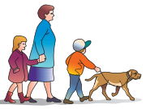
дивись
Оглядайте пішохідні переходи та перехрестя — багато пішоходів не усвідомлюють, яка відстань потрібна транспортному засобу, щоб зупинитися. Вони можуть раптово вийти на вулицю без попередження. Кожного разу, коли ви наближаєтеся до пішохідного переходу або перехрестя:
- Зважайте на перешкоди для огляду. Не обганяйте, якщо бачите зупинений на пішохідному переході транспортний засіб, — це незаконно й небезпечно. Водій міг зупинитися, щоб дати пішоходам перейти дорогу.
- Не в’їжджайте на пішохідний перехід, не перевіривши, що він вільний, навіть коли сигнал зелений. Хтось може намагатися перебігти. Люди, яким важко швидко перейти дорогу, — літні люди, особи з інвалідністю та батьки з малими дітьми — можуть усе ще бути на переході.
- Пильнуйте пішоходів на поперечній вулиці кожного разу, коли робите поворот.
Будьте уважні у шкільних зонах і зонах ігрових майданчиків — уважно спостерігайте, коли їдете шкільною зоною або зоною ігрового майданчика. Менших дітей важче побачити, ніж дорослих, і вони менш передбачувані.
Коли ви наближаєтеся до шкільної зони в час, коли діти можуть приходити, виходити або мати обідню перерву, дивіться далеко вперед, чи немає шкільних патрулів або регулювальників переходу — ви завжди зобов’язані їх слухатися.
Докладніше про обмеження швидкості у шкільних зонах і зонах ігрових майданчиків див. розділ 3, знаки, сигнали та дорожня розмітка.
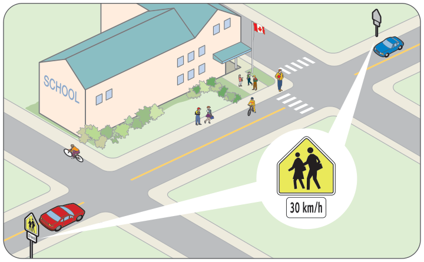
Уважно спостерігайте в житлових районах — діти та інші люди можуть рухатися непередбачувано. Пам’ятайте: м’яч або хокейні ворота можуть означати, що поблизу граються діти.
Будьте особливо обережні, коли даєте задній хід. Огляньте простір навколо автомобіля, перш ніж сісти в нього, а потім зробіть круговий огляд на 360 градусів перед початком руху. Важливо продовжувати перевіряти, бо ви можете легко наїхати задом на дитину або на домашню тварину, якщо не спостерігаєте уважно.
Пильнуйте пішоходів з інвалідністю — будьте особливо уважні, якщо бачите людину з порушенням зору. (Вона може мати білу тростину або йти із собакою-провідником.) Часто така людина піднімає тростину, коли не впевнена, що може безпечно перейти вулицю. Це для вас сигнал зупинитися і дати їй право переваги. Не лякайте таку людину чи її собаку-провідника, різко додаючи обертів двигуна або сигналячи.
Люди на моторизованих скутерах або у візках також користуються дорогами. Формально вони повинні бути на тротуарі, але не всі дороги мають тротуари. Крім того, тротуари можуть бути занадто нерівними чи вузькими для руху або важкодоступними.
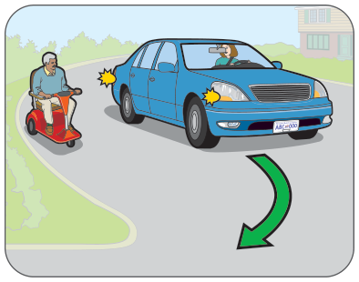
думай
Знайте правила — ви повинні уступати право переваги пішоходам:
- на позначених пішохідних переходах, якщо пішохід близько до вашої половини дороги
- на перехрестях (пішоходи біля вашої половини дороги мають право переваги навіть там, де немає позначеного пішохідного переходу)
- коли ви повертаєте
- коли ви виїжджаєте на дорогу з під’їзної дороги або провулка.
Уникнути наїзду на пішохода — це завжди обов’язок водія.
дій
Керування швидкістю та запас простору
Сповільнюйтеся, коли бачите пішоходів, які можуть вийти на ваш шлях, і залишайте їм багато місця.
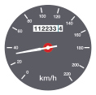
Велосипедисти
Велосипедисти їздять і на роботу, і для відпочинку, тому ви можете зустріти їх на дорозі будь-коли — вдень і вночі. Пам’ятайте, що велосипедисти мають на дорозі такі самі права та обов’язки, як і водії. Уважно спостерігайте постійно. Велосипедисти, як і пішоходи, уразливі.
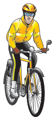
Будьте особливо обережні поблизу дітей на велосипедах. Діти звикли, що дорослі за ними пильнують, тому вони схильні не помічати небезпеки. Вони також мають слабкий периферійний зір і часто не можуть оцінити швидкість та відстань транспортних засобів, що рухаються назустріч. Вони можуть не знати правил дорожнього руху або того, скільки місця потрібно транспортним засобам для зупинки.
дивись
Перевірка через плече — перевірка через плече важлива, бо велосипеди та велосипедисти вузькі й легко можуть залишитися у вашій сліпій зоні. Обов’язково перевіряйте через плече, перш ніж:
- відчиняти двері, щоб вийти з транспортного засобу. Перевіряйте також бічне дзеркало. Одна з найпоширеніших причин аварій із велосипедистами — водії, які розчахують двері, не перевіривши.
- від’їжджати від бордюра
- зміщуватися праворуч.
Будьте уважні вночі — уважно спостерігайте, особливо за велосипедами, які виїжджають із поперечних вулиць. Деякі велосипедисти можуть не мати освітлення, світлоповертачів і світлоповертального одягу.
Будьте обережні під час обгону — перш ніж обігнати інший транспортний засіб, перевірте, чи немає велосипедистів, що рухаються назустріч, і велосипедистів перед засобом, який ви обганяєте.
Оглядайте перехрестя — особливо уважно робіть таке:
- Перевіряйте через плече, чи немає велосипедів, перед поворотом праворуч.
- Пильнуйте велосипедиста попереду, який чекає, щоб повернути ліворуч, якщо ви їдете прямо.
- Уважно перевіряйте, чи немає велосипедистів, що рухаються назустріч, перед поворотом ліворуч.
- Уважно перевіряйте, чи не переходять дорогу велосипедисти, коли ви наближаєтеся до місця, де велосипедна стежка виходить на дорогу.
- Пам’ятайте, що велосипедист, який їде головною дорогою, може наближатися швидше, ніж ви думаєте.
думай
Знайте правила — велосипедисти дотримуються тих самих правил і норм, що й водії.
- Уступайте право переваги велосипедистам так само, як будь-якому іншому транспортному засобу. Якщо на перехресті право переваги у вас, рухайтеся, коли це безпечно. Велосипедист очікує, що ви дотримуватиметеся правил дорожнього руху.
- Пам’ятайте, що велосипедисти не завжди тримаються праворуч. Щоб повернути ліворуч, наприклад, їм потрібно перемістися в ліву смугу. Якщо смуга вузька або якщо на ній скло чи яма
праворуч, велосипедист має право зміститися ближче до середини задля безпеки.
- Звертайте увагу на велосипедні смуги. Докладніше про ці смуги див. розділ 4, правила дорожнього руху.
дій
Запас простору
Тримайте дистанцію — залишайте велику дистанцію. Ви повинні мати змогу не наїхати на велосипедиста, який упаде. Велосипедисти, які хитаються, ймовірно недосвідчені й падають частіше за досвідчених. Давайте їм навіть більше простору, ніж звичайно.
Залишайте запас збоку — значна кількість аварій із велосипедистами трапляється через зачіпання боком. Переконайтеся, що місця достатньо, якщо ви хочете обігнати велосипедиста. На вузькій дорозі дочекайтеся вільного прямого відрізка, який дозволить вам виїхати й дати велосипедистові місце. Пам’ятайте: під час обгону велосипедиста вам дозволено перетинати одинарну суцільну жовту лінію, якщо ви можете зробити це безпечно. На багатосмуговій дорозі змініть смугу, а не тісніть велосипедиста.
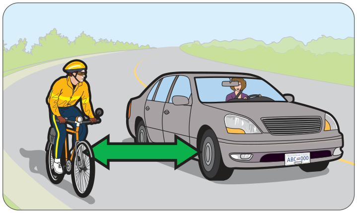
Комунікація
Розпізнавайте сигнали рукою — розумійте сигнали рукою, які використовують велосипедисти. Велосипедист може подати сигнал повороту праворуч, витягнувши праву руку вбік. Докладніше про сигнали рукою див. підрозділ «Указівники повороту» у розділі 5, дивись – думай – дій.
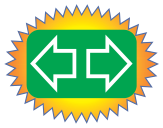
Установлюйте зоровий контакт — велосипедист часто використовує зоровий контакт для комунікації. Установіть його, якщо можете. Імовірно, велосипедист намагається передбачити ваш наступний маневр.
Не сигнальте — не сигнальте велосипедистові, якщо вам не потрібно попередити. Гучний сигнал може налякати велосипедиста й навіть спричинити падіння.
Мотоциклісти
Як і велосипедисти, мотоциклісти — уразливі учасники дорожнього руху. Вони не захищені зовнішнім каркасом, подушками безпеки чи бамперами, і їх іноді важко побачити.
Понад половина аварій із мотоциклами призводить до травм або смерті.
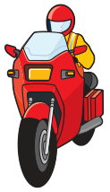
дивись
Шукайте підказки — іноді указівники повороту мотоцикла важко побачити. Спостерігайте за мотоциклістом, щоб побачити підказки. Якщо мотоцикліст перевіряє через плече або мотоцикл нахиляється, він, імовірно, планує змінити смугу чи повернути.
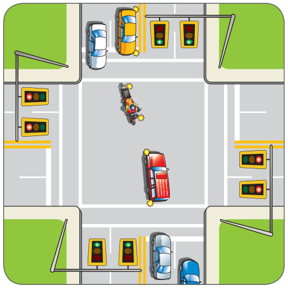
Оглядайте перехрестя — уважно шукайте мотоцикли, коли під’їжджаєте до перехрестя:
- Коли повертаєте ліворуч, пильнуйте мотоцикли, що рухаються назустріч. Мотоцикли важко побачити, особливо вночі або в щільному потоці. Також важко оцінити, наскільки швидко вони наближаються.
- Коли проїжджаєте перехрестя, пильнуйте мотоцикл, що рухається назустріч і може повертати ліворуч.
дій
Запас простору
Залишайте запас збоку — ніколи не намагайтеся ділити смугу з мотоциклом. Мотоциклу потрібна вся смуга, щоб рухатися безпечно.
Тримайте дистанцію — коли ви позаду мотоцикла, тримайте дистанцію щонайменше три секунди, тому що:
- мотоцикли можуть зупинятися дуже швидко;
- мотоциклісти можуть потрапити в занос і впасти через погані дорожні умови. Потрібно багато місця, щоб безпечно зупинитися.
Залишайте простір під час обгону — обганяючи мотоцикл, залишайте багато простору. Ваш транспортний засіб може кинути бруд або воду в обличчя мотоциклісту.
Комунікація
Установлюйте зоровий контакт — щоразу, коли це можливо.
Читайте мову транспортного засобу — не вважайте, що мотоцикліст у лівій частині смуги планує повернути ліворуч. Мотоциклісти часто їдуть у лівій частині смуги, щоб бути помітнішими.
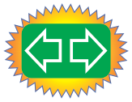
Легкові транспортні засоби
Коли ви за кермом, ви взаємодієте з водіями автомобілів, мінівенів і легких вантажівок. Водії легкових транспортних засобів можуть бути так само непередбачуваними, як інші учасники дорожнього руху. Вони не завжди дивляться вперед. Їхні транспортні засоби можуть бути погано обслуговані — наприклад, гальма та указівники повороту можуть працювати несправно. А деякі водії можуть бути втомленими, нетерплячими або з порушенням здатності керувати.
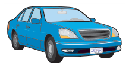
Використовуйте всі свої навички «дивись – думай – дій», щоб спостерігати за іншими легковими транспортними засобами й безпечно реагувати.
Великі транспортні засоби
Великі транспортні засоби поводяться на дорозі зовсім інакше, ніж автомобілі. Залишайте їм багато місця.
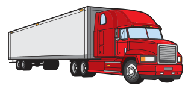
дій
Запас простору
Тримайте дистанцію — великий транспортний засіб може закрити від вас небезпеки попереду. Ви бачитимете більше, якщо збільшите дистанцію.
Якщо ви стоїте на підйомі позаду великого транспортного засобу, пам’ятайте, що він може відкотитися назад, коли водій відпустить гальмо. Залишайте додатковий простір спереду.
У дощову погоду великі транспортні засоби можуть кидати бруд або воду на ваше лобове скло, погіршуючи видимість. Їхні шини можуть також підкидати каміння, яке може влучити у ваш транспортний засіб. Якщо триматися далеко позаду, це допоможе цьому запобігти.
Цей знак ви побачите позаду деяких транспортних засобів. Він позначає ті, що рухатимуться повільно. Тримайте дистанцію й обганяйте лише тоді, коли впевнені, що це безпечно.
Коли ви бачите цей знак або знак Wide Load, Long Load чи Oversize Load на вантажівці або автомобілі супроводу, це означає, що перевозять негабаритний вантаж.
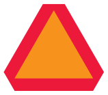
Тримайтеся поза сліпими зонами — у великих транспортних засобів є великі сліпі зони і позаду, і збоку. Не заїжджайте у сліпі зони, інакше водій вас не побачить. Ви повинні бачити обидва дзеркала вантажівки або автобуса, що їде перед вами. Ніколи не намагайтеся проскочити позаду вантажівки, якщо вона дає задній хід, заїжджаючи на розвантажувальну платформу або виїжджаючи з під’їзної дороги, — ви потрапите в одну зі сліпих зон водія вантажівки й ризикуєте отримати удар.
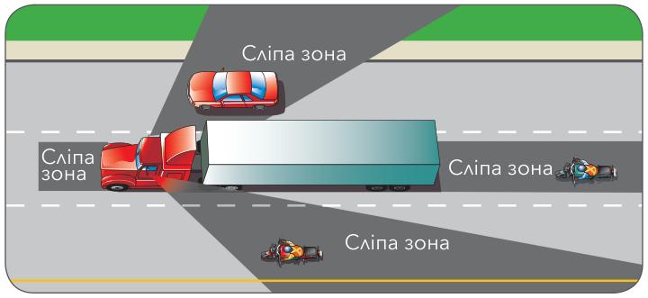
Залишайте простір під час обгону — для обгону потрібно багато простору. Пам’ятайте, що вантажівки довгі — деякі тягнуть два причепи. Не обганяйте, якщо не впевнені, що простору достатньо.
Якщо ви обганяєте великий транспортний засіб або змінюєте смугу перед ним, не забудьте залишити додатковий простір, перш ніж повернутися у смугу. Великим транспортним засобам потрібно більше часу, щоб сповільнитися. Перед тим як повернутися у смугу, переконайтеся, що бачите фари вантажівки у дзеркалі заднього огляду, а далі тримайте свою швидкість.
Якщо вантажівка починає сповільнюватися задовго до червоного сигналу, пам’ятайте: водієві потрібен увесь цей простір, щоб вчасно зупинитися. Ніколи не займайте його — ви можете отримати удар у задню частину.
Дайте місце для поворотів — великим транспортним засобам потрібно багато місця для повороту. Коли вони повертають праворуч, вас може затиснути між вантажівкою та бордюром.
Проблема з простором може виникнути й тоді, коли ви на дорозі, на яку повертає великий транспортний засіб. Водієві може знадобитися перетнути центральну лінію або зрізати кут, щоб завершити поворот. І тут тримайте дистанцію.
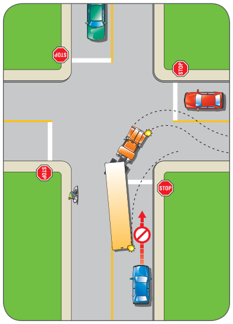
Уникайте турбулентності — великі транспортні засоби створюють турбулентність, яка може відштовхувати вас від транспортного засобу або притягувати до нього. Турбулентність створює проблеми, коли ви обганяєте велику вантажівку або коли зустрічаєте її на своєму шляху. Залишайте багато простору збоку і міцно тримайте рульове колесо.
Комунікація
Читайте мову транспортного засобу — багато великих транспортних засобів обладнані моторними сповільнювачами, які сповільнюють транспортний засіб без використання гальм. Водії вантажівок сповільнюються також передачами. Це означає, що вантажівка або автобус попереду можуть сповільнитися без увімкнення стоп-сигналів. Дивіться вперед і слухайте, чи не змінюється шум двигуна вантажівки.
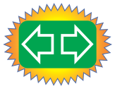
Помічайте ознаки того, що великий транспортний засіб зараз дасть задній хід — звуковий сигнал або сповіщувач, аварійна сигналізація чи ліхтарі заднього ходу.
Подавайте сигнал заздалегідь — якщо ви їдете перед великим транспортним засобом, подавайте сигнал завчасно, перш ніж сповільнитися, повернути чи зупинитися. Їм потрібно багато часу, щоб сповільнитися.
Шкільні автобуси
дивись
Шукайте підказки — шкільний автобус, який зупинився, щоб випустити дітей, має вгорі вогні, що блимають поперемінно, а іноді й висувний знак STOP. Водій шкільного автобуса може увімкнути поперемінні блимаючі жовті вогні, готуючись до зупинки.
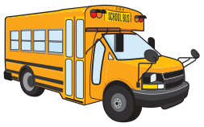
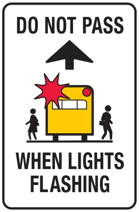
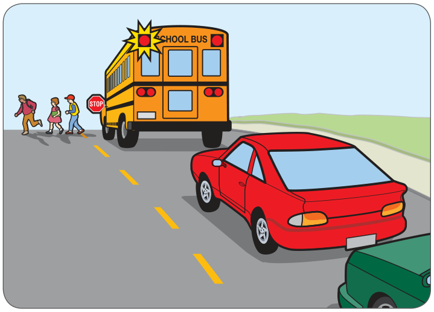
думай
Знайте правила — коли ви бачите шкільний автобус із поперемінними блимаючими червоними вогнями вгорі, ви повинні зупинитися, незалежно від того, наближаєтеся ви до нього спереду чи позаду. Транспортні засоби на всіх смугах повинні зупинитися.
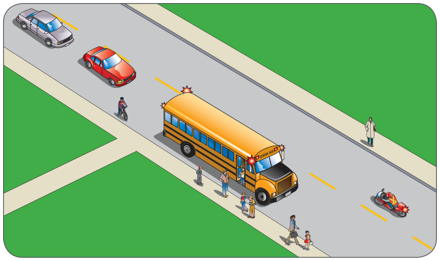
Автобуси громадського транспорту
дивись
Слідкуйте за автобусами, які зупинилися — вони можуть закривати вам огляд пішоходів, що збираються переходити вулицю, або можуть готуватися виїхати в потік.
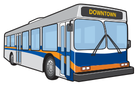
думай
Знайте правила — ви повинні дати автобусу громадського транспорту, який подає сигнал і показує знак «уступіть автобусу», виїхати з крайньої правої смуги або від зупинки. Це правило діє на всіх дорогах, де обмеження швидкості становить 60 км/год або менше.
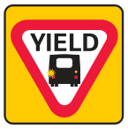
дій
Запас простору та керування швидкістю
Змініть смугу, щоб дати автобусу виїхати, якщо в сусідній смузі є місце, або сповільніться, якщо змінити смугу безпечно неможливо.
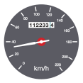
Транспортні засоби екстрених служб
До транспортних засобів екстрених служб належать поліцейські автомобілі, автомобілі швидкої допомоги та пожежні автомобілі.
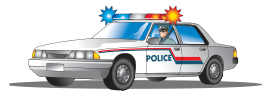
дивись
Слухайте сирени та стежте за проблисковими маячками — визначте, звідки їде транспортний засіб екстрених служб. Після того як він проїхав, дивіться та слухайте, бо можуть їхати інші.
думай
Знайте правила — транспортні засоби екстрених служб із проблисковими маячками та сиренами завжди мають право переваги. Увесь транспорт в обох напрямках повинен зупинитися. (Виняток: якщо ви на розділеному шосе, а транспортний засіб екстрених служб наближається з іншого боку розділової смуги, вам може не потрібно зупинятися. Переконайтеся, що цей транспортний засіб ніяк не зможе виїхати на ваш бік шосе.)
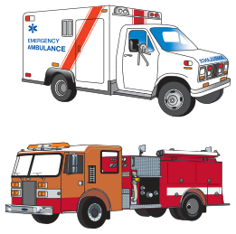
Звільніть шлях — не перегороджуйте шлях транспортним засобам екстрених служб. Зазвичай найкраще притиснутися праворуч і зупинитися (або ліворуч, якщо ви їдете лівою смугою розділеного шосе чи вулицею з одностороннім рухом). Не зупиняйтеся на перехресті. Думайте заздалегідь і майте план, як створити шлях для транспортного засобу екстрених служб.
Проїжджати по пожежному рукаву заборонено.
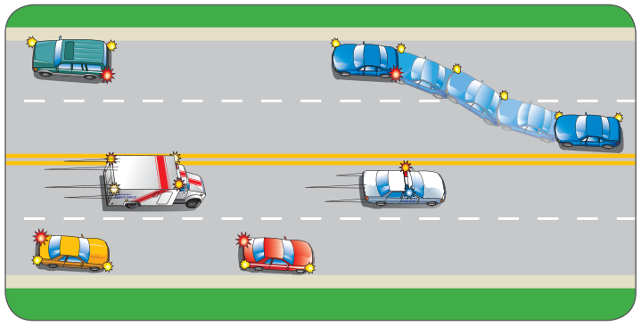
дій
Запас простору та керування швидкістю
Тримайте дистанцію — коли ви їдете за пожежним автомобілем, ви повинні триматися на відстані не менше 150 метрів.
Комунікація
Подавайте сигнал — увімкніть указівник повороту, щоб водій транспортного засобу екстрених служб знав, що ви побачили його та притискаєтеся до краю дороги.
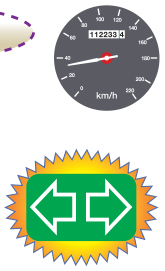
Транспортні засоби, що стоять із проблисковими маячками
Водії повинні сповільнюватися та залишати багато місця, коли проїжджають транспортні засоби, що стоять із проблисковими маячками, щоб зробити шосе безпечнішими для правоохоронців, працівників екстрених служб та інших працівників на дорозі. Це правило діє для всіх транспортних засобів, яким дозволено показувати блимаючі жовті, червоні, білі або сині вогні, зокрема тих, що використовують пожежні служби, правоохоронні органи, інспектори комерційного транспорту, інспектори з охорони природи, парамедики, оператори буксирів, працівники з обслуговування шосе, працівники комунальних служб, землемери, працівники служби контролю за тваринами та збирачі сміття.
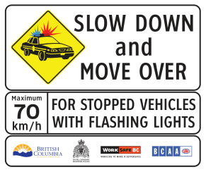
дивись
Шукайте – транспортні засоби з проблисковими маячками на краю дороги.
думай
Знайте правила – увесь транспорт повинен сповільнюватися, наближаючись до транспортних засобів, що стоять із проблисковими маячками. Наближаючись до таких транспортних засобів, ви повинні їхати не швидше ніж 70 км/год, якщо обмеження швидкості становить 80 км/год або більше, і не швидше ніж 40 км/год, якщо обмеження швидкості менше ніж 80 км/год. (Виняток: це правило не діє, якщо ви на розділеному шосе та наближаєтеся до транспортного засобу з проблисковими маячками з протилежного напрямку.)
Якщо ви їдете смугою, найближчою до транспортного засобу, що стоїть із проблисковими маячками, ви також повинні змінити смугу, якщо це безпечно.
дій
Запас простору та керування швидкістю
Сповільнюйтеся та залишайте простір, коли проїжджаєте транспортні засоби з проблисковими маячками на краю дороги. Змінюйте смугу, щоб забезпечити безпечний запас простору, якщо це безпечно.
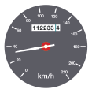
Зони дорожніх робіт
Дорожні бригади цілий рік обслуговують і покращують наші дороги.
Незважаючи на знаки зони дорожніх робіт і регулювальників дорожніх робіт, аварії в зонах дорожніх робіт все одно трапляються — головним чином тому, що деякі водії не звертають уваги.
дивись
Оглядайте дорогу попереду — шукайте зони дорожніх робіт попереду та будьте готові виконувати вимоги засобів регулювання руху в зоні.
Будьте уважні вночі — дорожні роботи відбуваються не тільки вдень. Через високу інтенсивність руху вдень усе більше дорожніх робіт виконують уночі. Уночі в зонах дорожніх робіт потрібно бути особливо уважними та їхати особливо повільно.
Огляньтеся навколо — те, що ви не бачите відразу регулювальників дорожніх робіт, самих робіт або працівників у зоні дорожніх робіт, не означає, що їх там немає. Будьте пильними щодо регулювальників дорожніх робіт, дорожніх працівників і техніки.
думай
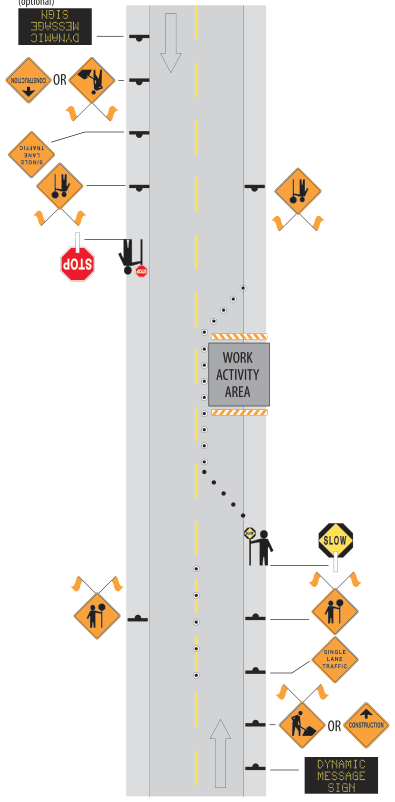
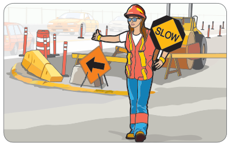
Знайте правила — ви повинні виконувати вказівки регулювальників дорожніх робіт і знаків дорожніх робіт від початку до кінця зони дорожніх робіт. Обмеження швидкості в зоні дорожніх робіт діють 24 години на добу, коли вони вказані.
Думайте наперед — зони дорожніх робіт часто вимагають перекриття смуг, тому вам може знадобитися змінити смугу. Вливайтеся в потік якнайшвидше, щоб об’їхати перекриту смугу. Це допоможе підтримувати рух потоку.
Плануйте наперед — очікуйте затримок і враховуйте їх, виїжджаючи раніше, щоб вчасно дістатися місця призначення. Дорожні бригади там не для того, щоб особисто вам створювати незручності — вони
покращують дороги для всіх. Перевіряйте радіо, телебачення та вебсайти, щоб дізнатися останні повідомлення й оновлення про рух і знати, що відбувається на дорогах у вашому районі та на вашому маршруті. Подумайте про альтернативний маршрут.
дій
Запас простору та керування швидкістю
Сповільнюйтеся — покриття дороги може бути нерівним або без твердого покриття, тому сповільніться. Ви повинні виконувати обмеження швидкості в зоні дорожніх робіт. Штрафи в зонах дорожніх робіт подвійні.
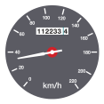
Зупиняйтеся за вказівкою — зупиняйтеся, коли цього вимагають регулювальники дорожніх робіт або інші засоби регулювання руху. У деяких зонах дорожніх робіт вам може знадобитися дочекатися автомобіля супроводу, який проведе вас через зону робіт.
Тримайте дистанцію — залишайте велику дистанцію між вашим транспортним засобом і транспортним засобом безпосередньо попереду. Не змінюйте смугу в зоні дорожніх робіт.
Залишайте запас збоку — залишайте простір між вами, дорожніми бригадами та їхньою технікою в зонах дорожніх робіт.
Поїзди
Щороку люди гинуть або отримують серйозні травми в зіткненнях транспортних засобів із поїздами, тому потрібно бути обережними, наближаючись до залізничного переїзду. Більшості поїздів потрібно приблизно два кілометри, щоб зупинитися, — ніколи не намагайтеся проскочити перед поїздом.
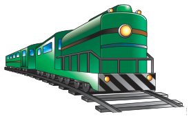
дивись
Шукайте підказки — про залізничний переїзд попереду попереджає багато підказок:
- Знаки попереднього попередження — ці знаки повідомляють про переїзд попереду й вимагають дивитися, слухати та сповільнитися, бо вам може знадобитися зупинитися. Їх зазвичай встановлюють там, де переїзд попереду не видно (наприклад, на пагористих або звивистих дорогах). Знак рекомендованої швидкості під знаком попереднього попередження може показувати, що безпечна швидкість на дорозі менша за вказану.
- Дорожня розмітка — на підході до деяких залізничних переїздів на покритті можна побачити намальовану літеру «X». На деяких переїздах також є блимаючі вогні, звуковий сигнал і шлагбауми. Якщо ввімкнулися вогні та сигнал або шлагбаум опущено, це означає, що наближається поїзд.
Якщо видимість погана, ви можете не побачити поїзд, що наближається, але можете почути його свисток. Проте пам’ятайте, що поїзди не зобов’язані подавати свисток на кожному переїзді.
Спостерігайте уважно — пам’ятайте, що ваші очі можуть вас обманути. Часто здається, що поїзди рухаються значно повільніше, ніж насправді. Пасажирські поїзди в Канаді їдуть зі швидкістю до 160 км/год.
Будьте особливо обережні вночі. Половина всіх нічних зіткнень поїздів з автомобілями — це випадки, коли транспортний засіб вдаряється в бік поїзда, бо водій його не побачив.
Пильнуйте інших учасників дорожнього руху — на залізничних переїздах пильнуйте інших учасників дорожнього руху. Мотоциклістам і велосипедистам може знадобитися відвернути, щоб безпечно перетнути колії. Вони можуть зісковзнути й упасти на мокрих коліях, тому прикрийте гальмо й залиште додатковий простір.
Пильнуйте другий поїзд — пам’ятайте, що колій часто більше ніж одна, тому пильнуйте другий поїзд. Одна з головних причин аварій між автомобілями та поїздами — водій не чекає на другий поїзд, схований за першим.
думай
Знайте правила — поїзди завжди мають право переваги й не сповільнюються перед переїздами. Якщо шлагбаум опущено, ви повинні зупинитися й дочекатися його підняття, перш ніж перетинати колії. Якщо на переїзді блимають червоні вогні, ви повинні зупинитися. Перетинайте колії лише тоді, коли це безпечно. Якщо регулювальник із прапорцем вказує зупинитися, виконуйте ці вказівки. Якщо ви чуєте або бачите поїзд, що наближається до переїзду, зупиніться й не рухайтеся, поки це не стане безпечно.
Думайте наперед — якщо ваш транспортний засіб застряг на колії, вам доведеться швидко думати й діяти. Виведіть із транспортного засобу всіх пасажирів. Швидко відійдіть від колії не менше ніж на 30 метрів, щоб уникнути уламків, що розлітаються. Потім телефонуйте по допомогу:
- Transport Canada — шукайте номер телефону на зворотному боці знака залізничного переїзду
- 911 або місцева поліція.
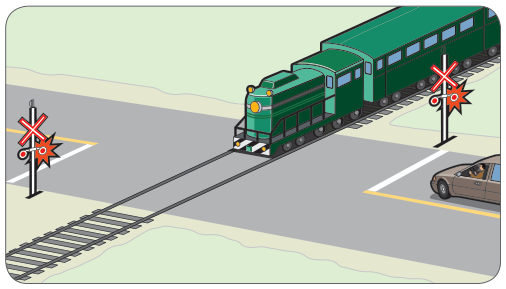
Примітка: повідомте місце, вказане на зворотному боці знака залізничного переїзду.
дій
Керування швидкістю
Рухайтеся з безпечною швидкістю — вночі ви завжди повинні мати змогу зупинитися в межах відстані, освітленої вашими фарами.
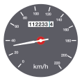
Знижуйте передачу — якщо ви керуєте транспортним засобом із механічною коробкою передач, перейдіть на нижчу передачу, перш ніж почати перетинати колії. Ніколи не перемикайте передачі на переїзді, бо двигун може заглохнути.
Запас простору
Тримайте дистанцію — ніколи не застрягайте на переїзді. Коли рух щільний, чекайте, поки зможете звільнити переїзд, перш ніж рухатися вперед.
Коні
На більшості громадських доріг дозволено їздити верхи.
дивись
Оглядайте дорогу попереду — шукайте коней і вершників.
думай
Знайте правила — вершники та візники мають ті самі права, що й водії механічних транспортних засобів, і повинні дотримуватися тих самих правил.
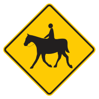
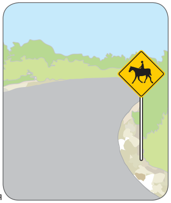
Знайте небезпеки — коня може злякати раптовий рух або шум. Вершник може не втримати коня.
дій
Запас простору
Сповільнюйтеся — наближайтеся до вершника з конем або до коня з візком повільно. Тримайте велику дистанцію.
Залишайте простір під час обгону — обганяючи їх, залишайте додаткове місце.
Обганяйте обережно — коня може злякати раптовий рух або шум. Не сигнальте й обганяйте обережно та повільно.
Будьте готові зупинитися — якщо вершник не може впоратися з конем, зупиніться. Краще почекати, поки вершник знову опанує коня, ніж ризикувати обгоном.